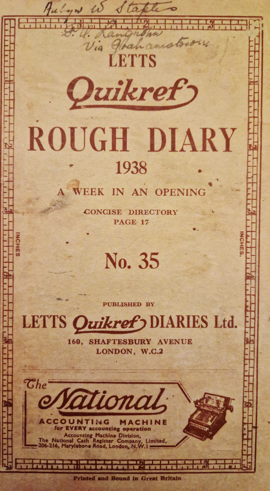

Aubyn Warner Staples Diary
Aged around 24 years old?
This diary was written in 1938 in the Eastern Cape of South Africa.
Attitudes back then were very different, where these are offensive
I will try remove them but will try keep as much of the original
content as possible for the sake of authenticity.
These views are NOT my own, I am trying to keep a bit of history alive.
Glynn Staples Skaffen1@gmail.com.
1st February 1938 Tuesday Hot.
Planting pines. Pushing hard.
Nothing of great interest has
happened today. Women
are loafing badly. James
harrowed the mealies in
the orchard.
2nd February 1938 Wednesday Hot day. Slight rain PM.
Still planting pines. Jacks oxen are
ploughing just ahead of the planting
and Jonash's oxen are riding on
plants. I made a hard push
today. In the afternoon I took the
tractor up to the land and ploughed
out the ends. A heavy thunder
storm fell near Grahamstown
but did not quite reach us. We
got just enough to quit work.
3 boys from AGP!
3rd February 1938 Thursday Warm.
Still planting pines as fast as I
can - rushing in fact. Dad
came over and we looked things
over. After dinner on my way
back to the house, a small puffadder
bit me on my third finger. I
gave it first aid, then went home
on the Motor bike, then Dad drove
me to hospital, where I had anti-serum
4th February 1938 Friday Cool. Cloudy.
